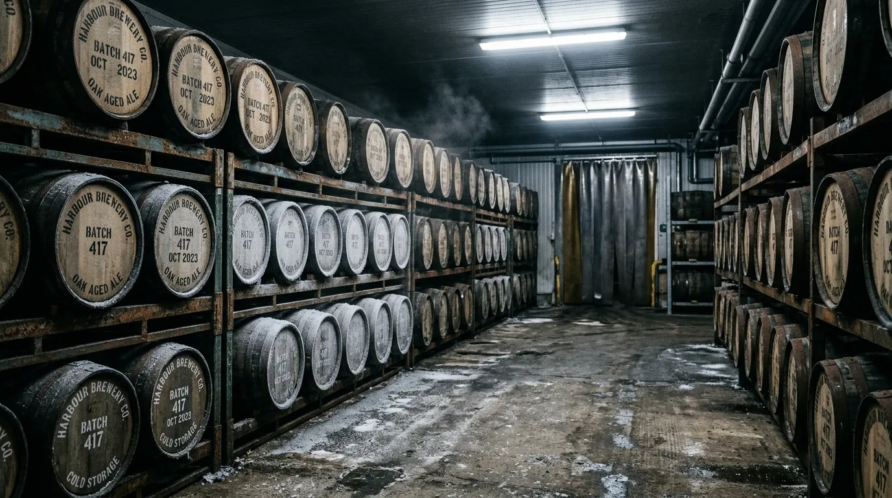
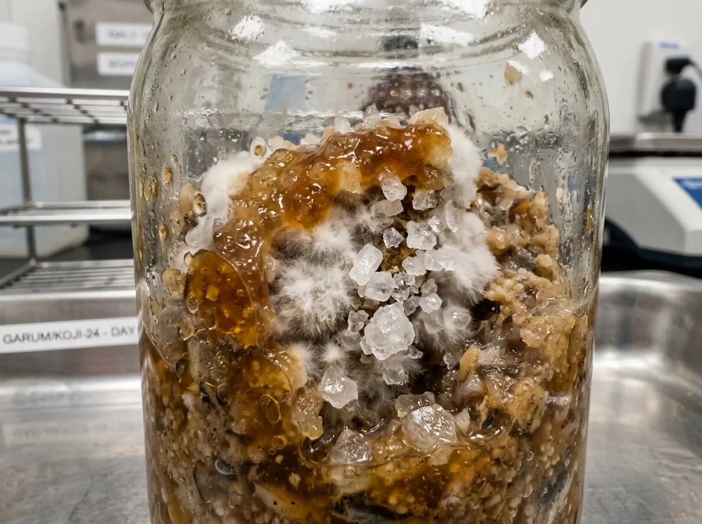
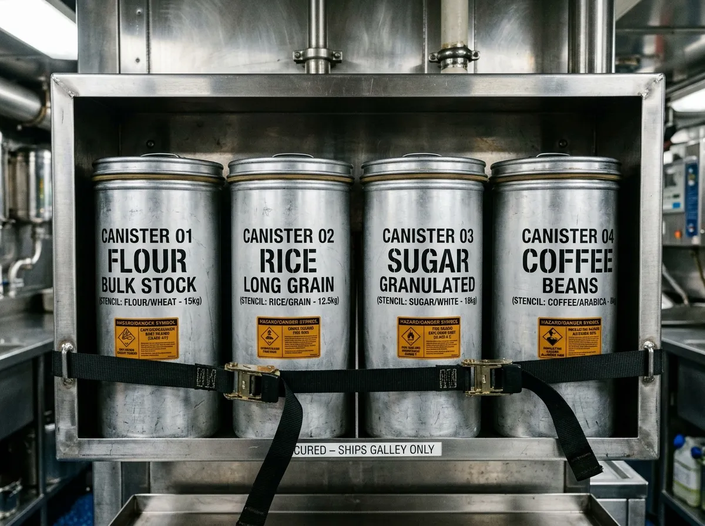

BIOCULTURE VICTUALS FOR MARITIME AND POLAR DEPLOYMENTS.
Cold-fermented pelagic protein concentrates and wild-koji preservation rations engineered for extreme-environment field kitchens.
K-92 produces ambient-stable umami concentrates and koji-cured marine provisions at Fraserburgh Harbour for commercial fleet galleys and polar stations. Every batch utilizes wild fungal isolates and North Sea pelagic fish aged at four degrees Celsius under strict fourteen-point-eight percent salinity controls. We do not manufacture retail condiment sauces or accept domestic consumer orders.
01 // THE TRAWLER-LABORATORY COOPERATIVE
In 2020, the Peterhead Pelagic Fishermen's Co-operative partnered with microbiologists from Pentland Bioculture to solve a systemic food logistics vulnerability: standard canned rations degrade in nutritional density during prolonged sea deployments, while fresh victuals spoil within twelve days. The joint syndicate established Cold Store 3 at Fraserburgh Harbour to execute large-scale, unheated marine proteolysis using cold-adapted Aspergillus isolates.
Our process pairs whole autumn mackerel trimmings with organic Scottish pearl barley inoculated with Pentland strain P-74 koji. Fermentation proceeds across eighteen months in sealed European oak puncheons held at a constant four degrees Celsius, allowing endogenous proteases to break muscle tissue into free amino acids without bacterial putrefaction or rancidity.
Output is restricted to forty 200-litre casks per quarterly cure cycle. Every cask undergoes chromatographic amino acid verification and spore-count clearance before packaging into oxygen-impermeable aluminum field canisters for maritime dispatch.

THE COLD-CURED PROVISION MANIFEST
Uncompromising nutritional density, complete thermal stability, direct vessel procurement.
Mackerel Liquamen
Drift-Kelp Miso
Lacto-Cranberry Tar
Smoked Herring Shio-Koji
LOW-TEMPERATURE ENZYME KINETICS & BIOCHEMISTRY
Empirical scientific superiority over heat-sterilised or chemically acidified rations.
Psychrotolerant Fungal Enzymes
Pentland P-74 maintains eighty-two percent protease activity at precisely four degrees Celsius. This targeted kinetic suppression actively prevents the detrimental off-flavours and accelerated oxidative rancidity typically generated during standard high-temperature fermentation procedures.
Peptide Breakdown Curves
Continuous eighteen-month proteolysis ensures the comprehensive conversion of high-molecular-weight fish collagen and dense myosin structural proteins into highly bioavailable free amino acids, including critical concentrations of glutamate, aspartate, and lysine essential for cold-weather metabolic maintenance.
Zero-Refrigeration Stability
Total osmotic stabilization is achieved via precision saline saturation and an aggressively depressed water activity coefficient (a_w < 0.78). This environment completely halts pathogenic spore germination and guarantees biological safety across multi-year maritime deployments.
PROVENANCE & NUTRITIONAL EFFICIENCY MATRIX
Maximum nutritional density per kilogram of stowage space. Contrasting K-92 provisions against standard military and commercial maritime rations.
| Operational Parameter | Canned Military MREs | Standard Freeze-Dried Meals | K-92 Cold-Cured Provisions |
|---|---|---|---|
| Amino Acid Density per kg | 12 mg/g | 18 mg/g | 38 mg/g |
| Stowage Volume Footprint (litres/1000 meals) | 850 L | 420 L | 95 L |
| Shelf-Life at Sea Ambient (months) | 24 months | 60 months | 36+ months (active stability) |
| Preparation Fuel Requirement (kJ) | 450 kJ | 800 kJ | 0 kJ (Direct integration into ambient stock) |
| Scurvy/Palate Fatigue Mitigation Score | Low (High sensory exhaustion) | Moderate (Textural degradation) | Maximum (High umami receptor activation) |
FLEET PROOF & OPERATIONAL TELEMETRY
Proven performance in North Atlantic winter fisheries and Antarctic survey missions.
"Replaced two pallets of canned stock with four K-92 canisters. Zero crew palate fatigue over an eighty-day trawl."
"Total caloric baseline maintained despite severe logistics chain failures. The liquamen performs optimally at sub-zero storage."
"Superior osmotic stability. The provisions withstand heavy roll conditions without structural degradation."
INSTITUTIONAL ALLOCATION & DISPATCH PROTOCOL
Orderly, protocol-driven dispatch for registered vessels and research institutes.
Cask Reservation & Voyage Profiling
Registration of crew size, exact voyage duration, and primary galley water-boiling capacity.
Nitrogen Titration & Quality Clearance
Pre-shipment laboratory assay certifying free amino acid levels and zero micro-bacterial contaminants.
Canister Stamping & Cask Packaging
Sealed decanting into nitrogen-flushed five-litre aluminum field containers equipped with serialised tamper seals.
Portside Cold-Chain Handover
Direct dockside delivery at Fraserburgh, Peterhead, Aberdeen, or secure refrigerated transit to international shipping terminals.
TECHNICAL VICTUALLING FAQ
Authoritative operational clarity for vessel cooks and fleet engineers.
WHAT ARE THE RECOMMENDED GALLEY PREPARATION AND DILUTION RATIOS?
Standard protocols require one part K-92 provision to forty parts boiling stock for soups and heavy stews. Grain rations utilize a one-to-thirty ratio to ensure sufficient caloric density without overwhelming salt profiles.
WHAT ARE THE TEMPERATURE EXCURSION TOLERANCES?
Canisters have been extensively tested up to forty-five degrees Celsius during multi-week tropical ocean transits without structural failure. Below-freezing exposure will congeal the matrix but causes no biological harm.
HOW ARE HISTAMINE AND FISH ALLERGENS MANAGED?
Strict low-temperature processing entirely eliminates bacterial histamine production. However, all provisions contain high concentrations of fin-fish proteins and must be logged in the medical officer's allergen registry.
WHAT IS THE PROTOCOL FOR CANISTER RESEALING?
After initial galley opening, the aluminum lid must be aggressively torqued to re-engage the primary gasket seal. No secondary refrigeration is required if ambient humidity is below ninety percent.
WHAT ARE THE RETURN CREDITS FOR EUROPEAN OAK TRANSPORT PUNCHEONS?
Fleets returning undamaged two-hundred-litre oak puncheons to the Fraserburgh depot receive a fifty-pound credit applied immediately against their subsequent quarterly cure cycle allocation.
DO YOU PROVIDE PORT HEALTH EXPORT CERTIFICATION?
Yes. Comprehensive veterinary export certificates and sanitary documentation accompany all international naval and scientific fleet dispatches to guarantee rapid customs clearance.
COLD STORE REQUISITION TERMINAL
Direct supply portal for verified trade entities.
DEPOT LOGISTICS
Sub-level Cold Store 3
Shore Street
Fraserburgh Harbour
Aberdeenshire
AB43 9BP
Scotland
Coordinates: 57°41′N, 2°00′W
